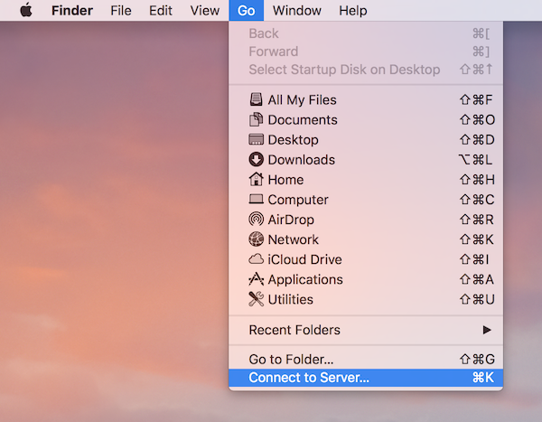

WebDAV yordamida Nextcloud fayllariga kirish
Nextcloud WebDAV protokolini toʻliq qoʻllab-quvvatlaydi va siz WebDAV orqali Nextcloud Fillari bilan ulanishingiz va sinxronlashingiz mumkin. Ushbu bobda siz Linux, macOS, Windows va mobil qurilmalarni Nextcloud serveringizga qanday ulashni bilib olasiz.
WebDAV "Distribution Authoring and Versioning" degan ma'noni anglatadi. Bu HTTP kengaytmasi bo'lib, masofaviy veb-serverlarda joylashgan fayllarni yaratish, o'qish va tahrirlashni osonlashtiradi. WebDAV mijozi yordamida siz Linux, macOS va Windows’dagi Nextcloud fayllaringizga (jumladan, aktsiyalarga) har qanday masofaviy tarmoq ulushiga o‘xshash tarzda kirishingiz va sinxronlashishingiz mumkin.
WebDAV-ni sozlashni boshlashdan oldin, mijoz qurilmalarini Nextcloud-ga ulashning tavsiya etilgan usulini qisqacha ko'rib chiqamiz.
Rasmiy Nextcloud ish stoli va mobil mijozlari
Kompyuterni Nextcloud serveri bilan sinxronlashtirishning tavsiya etilgan usuli rasmiy Nextcloud sinxronlash mijozlaridan foydalanishdir. Siz mijozni istalgan mahalliy katalogda fayllarni saqlash uchun sozlashingiz va Nextcloud serveridagi qaysi kataloglar bilan sinxronlashni tanlashingiz mumkin. Mijoz joriy ulanish holatini ko'rsatadi va barcha faoliyatni qayd qiladi, shuning uchun siz har doim kompyuteringizga qaysi masofaviy fayllar yuklab olinganligini bilib olasiz va mahalliy shaxsiy kompyuteringizda yaratilgan va yangilangan fayllar server bilan to'g'ri sinxronlanganligini tekshirishingiz mumkin.
Android va Apple iOS qurilmalarini sinxronlashtirishning tavsiya etilgan usuli rasmiy Nextcloud mobil ilovalari foydalanishdir.
Rasmiy Nextcloud ilovalarini Nextcloud serveriga ulash uchun veb-brauzeringizdan Nextcloud-ga kirish uchun foydalanadigan URL manzilidan foydalaning, masalan:
https://cloud.example.com
https://example.com/nextcloud (if Nextcloud is installed in a subdirectory called "nextcloud")
Uchinchi tomon WebDAV mijozlari
Agar xohlasangiz, WebDAV protokolini qo'llab-quvvatlaydigan har qanday uchinchi tomon mijozi (jumladan, operatsion tizimingizga o'rnatilgan bo'lishi mumkin) orqali kompyuteringizni Nextcloud serveringizga ulashingiz mumkin.
Mobil qurilmangizni Nextcloud-ga ulash uchun uchinchi tomon WebDAV-ga ega ilovalardan ham foydalanishingiz mumkin.
Uchinchi tomon mijozlaridan foydalanayotganda, ular Nextcloud bilan foydalanish uchun optimallashtirilmasligi yoki foydalanish holatlaringiz uchun muhim deb hisoblagan imkoniyatlarni amalga oshirish uchun optimallashtirilmasligi mumkinligini yodda tuting.
Nextcloud hamjamiyat a'zolari foydalanishi haqida xabar bergan mobil mijozlarga quyidagilar kiradi:
Nextcloud-ga ulanish uchun uchinchi tomon ilovalarini sozlashda foydalaniladigan URL rasmiy mijozlarnikiga qaraganda bir oz uzunroq:
https://cloud.example.com/remote.php/dav/files/USERNAME/
https://example.com/nextcloud/remote.php/dav/files/USERNAME/ (if Nextcloud is installed in a subdirectory called "nextcloud")
Note
Uchinchi tomon WebDAV mijozidan (jumladan, operatsion tizimingizning o'rnatilgan mijozidan) foydalanganda, tizimga kirish uchun oddiy parolingizdan ko'ra dastur parolidan foydalanishingiz kerak. Xavfsizlikni yaxshilashga qo'shimcha ravishda, bu ish unumdorligini sezilarli darajada oshiradi. Ilova parolini sozlash uchun Nextcloud veb-interfeysiga kiring, yuqori o‘ng burchakdagi avatarni bosing va Shaxsiy sozlamalar-ni tanlang. Keyin chap yon panelda Xavfsizlik ni tanlang va eng pastga o'ting. U erda siz ilova parolini yaratishingiz mumkin (kelajakda asosiy foydalanuvchi parolini o'zgartirmasdan ham bekor qilinishi mumkin).
Note
Quyidagi misollarda example.com/nextcloud manzilini Nextcloud serveringizning URL manzili (agar o‘rnatish domeningiz ildizida bo‘lsa, katalog qismini tashlab qo‘ying) va USERNAME ni ulanuvchi foydalanuvchining foydalanuvchi nomi bilan almashtirishingiz kerak.
Nextcloud-da WebDAV URL-manzilini (sozlamalarning pastki chap tomonida) ko'ring.
Linux yordamida fayllarga kirish
Linux operatsion tizimlaridagi fayllarga quyidagi usullardan foydalanib kirishingiz mumkin.
Nautilus fayl menejeri
Nextcloud hisobingizni GNOME boshqaruv markazi sozlaganingizda, fayllarga kirish huquqini bekor qilmasangiz, **fayllaringiz avtomatik ravishda Nautilus tomonidan WebDAV ulushi sifatida oʻrnatiladi.
Bundan tashqari, Nextcloud fayllaringizni qo'lda o'rnatishingiz mumkin. Nautilus fayl boshqaruvchisini Nextcloud ulushingizga ulash uchun davs:// protokolidan foydalaning:
davs://example.com/nextcloud/remote.php/dav/files/USERNAME/
Note
Agar server ulanishingiz HTTPS bilan himoyalanmagan bo'lsa, davs:// o'rniga dav:// dan foydalaning:

Note
Xuddi shu usul MATE's Caja va Cinnamon's Nemo kabi GVFS ishlatadigan boshqa fayl boshqaruvchilari uchun ishlaydi.
KDE va Dolphin fayl menejeri yordamida fayllarga kirish
Navigate to System Settings -> Networking -> Online Accounts
Click "Add Account..."
Click Nextcloud
Enter your server address
Follow the on-screen instructions to log in
After logging in, ensure you enable "Storage" in the "Use This Account For" section
You can now access your files in Dolphin under "Network" in the sidebar
(Optional) To add this as a shortcut in the sidebar, right click "Nextcloud Storage" then "Add to Places"
(Optional) To customise the shortcut, right click the shortcut in the sidebar then "Edit..." and customise the icon and label as you please
Linux buyruq satrida WebDAV o'rnatmalarini yaratish
Siz Linux buyruq satridan WebDAV o'rnatishlarni yaratishingiz mumkin. Agar siz Nextcloud-ga boshqa masofaviy fayl tizimini o'rnatish kabi kirishni afzal ko'rsangiz foydali bo'ladi. Quyidagi misolda shaxsiy o'rnatishni qanday yaratish va har safar Linux kompyuteringizga kirganingizda uni avtomatik ravishda o'rnatish ko'rsatilgan.
davfs2WebDAV fayl tizimi drayverini o`rnating, bu sizga boshqa har qanday masofaviy fayl tizimi kabi WebDAV aktsiyalarini o`rnatish imkonini beradi. Uni Debian/Ubuntu-ga o'rnatish uchun ushbu buyruqdan foydalaning:apt-get install davfs2
Uni CentOS, Fedora va openSUSE-ga o'rnatish uchun ushbu buyruqdan foydalaning:
yum install davfs2
O'zingizni
davfs2guruhiga qo'shing:usermod -aG davfs2 <username>
Keyin o'rnatish nuqtasi uchun uy katalogingizda
nextcloudkatalogini va shaxsiy konfiguratsiya faylingiz uchun.davfs2/yarating:mkdir ~/nextcloud mkdir ~/.davfs2
/etc/davfs2/secretsni ``~/.davfs2``ga nusxalash:cp /etc/davfs2/secrets ~/.davfs2/secrets
O'zingizni egasi sifatida belgilang va faqat o'qish-yozish egasiga ruxsat bering:
chown <linux_username>:<linux_username> ~/.davfs2/secrets chmod 600 ~/.davfs2/secrets
Nextcloud serveringiz URL manzili va Nextcloud foydalanuvchi nomi va parolingizdan foydalanib, `` sirlar`` faylining oxiriga Nextcloud login hisob ma`lumotlaringizni qo`shing:
https://example.com/nextcloud/remote.php/dav/files/USERNAME/ <username> <password> or $PathToMountPoint $USERNAME $PASSWORD for example /home/user/nextcloud john 1234
O'rnatish ma'lumotlarini
/etc/fstabga qo'shing:https://example.com/nextcloud/remote.php/dav/files/USERNAME/ /home/<linux_username>/nextcloud davfs user,rw,auto 0 0
Keyin quyidagi buyruqni ishga tushirish orqali uning o'rnatilishi va autentifikatsiya qilinishini tekshiring. Agar siz uni to'g'ri sozlasangiz, sizga root ruxsatnomalari kerak bo'lmaydi:
mount ~/nextcloud
Siz uni o'chirib qo'yishingiz ham kerak:
umount ~/nextcloud
Endi siz har safar Linux tizimiga kirganingizda Nextcloud ulushingiz WebDAV orqali avtomatik ravishda ~/nextcloud katalogiga o'rnatilishi kerak. Agar siz uni qoʻlda oʻrnatmoqchi boʻlsangiz, “/etc/fstab” da “auto” ni “noauto” ga oʻzgartiring.
Ma'lum muammolar
Muammo
Resurs vaqtincha mavjud emas
Yechim
Agar katalogda fayl yaratishda muammoga duch kelsangiz, /etc/davfs2/davfs2.conf tahrirlang va quyidagilarni qo'shing:
use_locks 0
Muammo
Sertifikat bo'yicha ogohlantirishlar
Yechim
O'z-o'zidan imzolangan sertifikatdan foydalansangiz, ogohlantirish olasiz. Buni o'zgartirish uchun sertifikatingizni tanib olish uchun davfs2 ni sozlashingiz kerak. mycertificate.pem faylini /etc/davfs2/certs/``ga nusxalash. Keyin ``/etc/davfs2/davfs2.conf ni tahrirlang va servercert qatorini izohdan olib tashlang. Endi ushbu misoldagi kabi sertifikatingiz yo'lini qo'shing:
servercert /etc/davfs2/certs/mycertificate.pem
MacOS yordamida fayllarga kirish
Note
MacOS Finder bir qator amalga oshirish muammolaridan aziyat chekadi <http://sabre.io/dav/clients/finder/>`_ va agar Nextcloud serveri Apache va mod_php yoki Nginx 1.3.8+ da ishlayotgan bo'lsagina foydalanish kerak. WebDAV aktsiyalariga kirish imkoniyatiga ega bo'lgan muqobil macOS-mos keluvchi mijozlar orasida Cyberduck kabi ochiq kodli ilovalar mavjud (bu yerdagi ko'rsatmalarga qarang <https://docs.nextcloud.com/server/latest/user_manual/files/access_webdav-cyber-acccessing-files-es-a) Filezilla. Tijorat mijozlariga Mountain Duck, Forklift, Transmit va Commander One kiradi.
MacOS Finder orqali fayllarga kirish uchun:
Finderning yuqori menyu panelidan O'tish > Serverga ulanish…-ni tanlang:
Serverga ulanish… oynasi ochilganda, Server manzili: maydoniga Nextcloud serveringizning WebDAV manzilini kiriting, ya’ni:
https://cloud.YOURDOMAIN.com/remote.php/dav/files/USERNAME/

Ulanish tugmasini bosing. Sizning WebDAV serveringiz ish stolida umumiy disk sifatida paydo bo'lishi kerak.
Microsoft Windows yordamida fayllarga kirish
Agar siz WebDAV-ning mahalliy Windows ilovasidan foydalansangiz, Windows Explorer-dan foydalanib Nextcloud-ni yangi disk bilan taqqoslashingiz mumkin. Drayvga xaritalash Nextcloud serverida saqlangan fayllarni xaritalangan tarmoq diskida saqlangan fayllarni ko'rib chiqish kabi ko'rib chiqish imkonini beradi.
Ushbu xususiyatdan foydalanish tarmoq ulanishini talab qiladi. Agar siz fayllaringizni oflayn rejimda saqlamoqchi bo'lsangiz, Nextcloud-dagi barcha fayllarni mahalliy qattiq diskingizning bir yoki bir nechta kataloglari bilan sinxronlashtirish uchun Ish stoli mijozidan foydalaning.
Note
Windows 10 endi drayverni xaritalashdan oldin HTTPS yoqilgan bo'lsa, asosiy autentifikatsiyaga ruxsat beradi.
Windowsning eski versiyalarida Windows reestrida asosiy autentifikatsiyadan foydalanishga ruxsat berishingiz kerak:
regedit-ni ishga tushiring vaHKEY_LOCAL_MACHINE\SYSTEM\CurrentControlSet\Services\WebClient\Parametersga o`ting.BasicAuthLevel(Windows Vista, 7 va 8) yokiUseBasicAuth(Windows XP va Windows Server 2003),DWORDqiymatini yarating yoki tahrirlang va SSL ulanishlari uchun uning qiymat ma`lumotlarini1ga o`rnating.0qiymati Asosiy autentifikatsiya o`chirilganligini bildiradi va2qiymati ham SSL, ham SSL bo`lmagan ulanishlarga ruxsat beradi (tavsiya etilmaydi).Keyin Ro'yxatga olish kitobi muharriridan chiqing va kompyuterni qayta yoqing.
Drayvlarni buyruq satri bilan xaritalash
Quyidagi misolda buyruq qatori yordamida drayverni qanday xaritalash ko'rsatilgan. Drayvni xaritalash uchun:
Windows-da buyruq satrini oching.
Kompyuter Z drayverini xaritalash uchun buyruq satriga quyidagi qatorni kiriting:
net use Z: https://<drive_path>/remote.php/dav/files/USERNAME/ /user:youruser yourpassword
Nextcloud serveringizning URL manzili sifatida <drive_path> bilan. Masalan:
net use Z: https://example.com/nextcloud/remote.php/dav/files/USERNAME/ /user:youruser yourpassword
Kompyuter Nextcloud hisob qaydnomangiz fayllarini Z harfi bilan taqqoslaydi.
Error
Agar siz quyidagi xatoni olsangiz `` Tizim xatosi 67 yuz berdi. Tarmoq nomi topilmadi.`` yoki tez-tez uzilib qolsa, Xizmatlar ilovasini oching va WebClient xizmati ishga tushganda va avtomatik ravishda ishga tushganiga ishonch hosil qiling.
Note
Tavsiya qilinmasa ham, ulanishni shifrlanmagan holda HTTP yordamida Nextcloud serverini ham ulashingiz mumkin.
Agar siz jamoat joyida bo'lganingizda qurilmalarda HTTP ulanishlaridan foydalanishni rejalashtirmoqchi bo'lsangiz, zarur xavfsizlikni ta'minlash uchun VPN tunnelidan foydalanishni qat'iy tavsiya qilamiz.
Muqobil buyruq sintaksisi:
net use Z: \\example.com@ssl\nextcloud\remote.php\dav /user:youruser
yourpassword
Windows Explorer yordamida drayverlarni xaritalash
Microsoft Windows Explorer yordamida diskni xaritalash uchun:
MS Windows kompyuteringizda Windows Explorer-ni oching.
Kompyuter yozuviga sichqonchaning o'ng tugmachasini bosing va ochiladigan menyudan Map Network drive...-ni tanlang.
Nextcloud xaritasini ko'rsatmoqchi bo'lgan mahalliy tarmoq drayverini tanlang.
Nextcloud misolingiz manzilini belgilang, keyin /remote.php/dav/files/USERNAME/.
Masalan:
https://example.com/nextcloud/remote.php/dav/files/USERNAME/
Note
SSL bilan himoyalangan serverlar uchun Kirish vaqtida qayta ulaning-ni belgilang va keyingi qayta yuklashda xaritalash doimiy bo'lishini ta'minlash. Agar Nextcloud serveriga boshqa foydalanuvchi sifatida ulanishni istasangiz, Turli hisobga olish maʼlumotlari yordamida ulanish-ni belgilang.

Finishtugmasini bosing.
Windows Explorer tarmoq drayverini xaritalashtirib, Nextcloud nusxangizni mavjud qiladi.
Cyberduck yordamida fayllarga kirish
Cyberduck ochiq kodli FTP, SFTP, WebDAV, OpenStack Swift va Amazon S3 brauzeri macOS va Windows tizimlarida fayllarni uzatish uchun moʻljallangan.
Note
Bu misol Cyberduck 4.2.1 versiyasidan foydalanadi.
Cyberduck-dan foydalanish uchun:
Etakchi protokol ma'lumotlarisiz serverni belgilang.
Masalan:
example.comTegishli portni belgilang.
Siz tanlagan port sizning Nextcloud serveringiz SSL-ni qo'llab-quvvatlamasligiga bog'liq. Agar siz SSL-dan foydalanishni rejalashtirmoqchi bo'lsangiz, Cyberduck boshqa ulanish turini tanlashingizni talab qiladi.
- Masalan:
Shifrlanmagan WebDAV uchun
80Xavfsiz WebDAV (HTTPS/SSL) uchun
443
Qolgan WebDAV URL manzilini “Yoʻl” maydoniga qoʻshish uchun “Qoʻshimcha imkoniyatlar” ochiladigan menyusidan foydalaning.
Masalan:
remote.php/dav/files/USERNAME/
Endi Cyberduck faylga Nextcloud serveriga kirish imkonini beradi.
Ma'lum muammolar
Muammo
Windows HTTPS orqali ulanmaydi.
Yechim 1
Windows WebDAV mijozi shifrlangan ulanishlarda Server nomi ko'rsatkichini (SNI) qo'llab-quvvatlamasligi mumkin. SSL-shifrlangan Nextcloud nusxasini o'rnatishda xatolikka duch kelsangiz, SSL-ga asoslangan serveringiz uchun maxsus IP-manzil tayinlash haqida provayderingizga murojaat qiling.
Yechim 2
Windows WebDAV mijozi TLSv1.1 va TLSv1.2 ulanishlarini qo'llab-quvvatlamasligi mumkin. Agar siz server konfiguratsiyasini faqat TLSv1.1 va undan yuqorisini ta'minlash uchun cheklagan bo'lsangiz, serveringizga ulanish muvaffaqiyatsiz bo'lishi mumkin. Qo'shimcha ma'lumot uchun WinHTTP hujjatlariga qarang.
Muammo
Siz quyidagi xato xabarini olasiz: Xato 0x800700DF: Fayl hajmi ruxsat etilgan chegaradan oshib ketdi va uni saqlab boʻlmaydi.
Yechim
Windows WebDAV ulushidan yoki unga uzatiladigan faylning maksimal hajmini cheklaydi. HKEY_LOCAL_MACHINE\\SYSTEM\\CurrentControlSet\\Services\\WebClient\\Parameters da FileSizeLimitInBytes qiymatini Modify-ni bosish orqali oshirishingiz mumkin.
Cheklovni maksimal 4 GB qiymatiga oshirish uchun O'nlik ni tanlang, 4294967295 qiymatini kiriting va Windows-ni qayta yoqing yoki WebClient xizmatini qayta yoqing.
Muammo
Yuqorida tavsiflangan qadamlar orqali Windows-ga WebDAV drayverini qo'shish Nextcloud-da mavjud bo'sh joyning to'g'ri hajmini ko'rsatmaydi va uning o'rniga C: diskining o'lchamini uning mavjud maydoni bilan ko'rsatadi.
Javob
Afsuski, bu WebDAV-ning o'zini cheklaydi, chunki u mijozga serverdan mavjud bo'sh joyni olish yo'lini ta'minlamaydi. Windows avtomatik ravishda C: diskining o'lchamini uning o'rniga bo'sh joy bilan ko'rsatish uchun orqaga tushadi. Shuning uchun, afsuski, bu muammoning haqiqiy echimi yo'q.
Muammo
WebDAV orqali Microsoft Office-dan fayllaringizga kirish muvaffaqiyatsiz tugadi.
Yechim
Ma'lum muammolar va ularning echimlari KB2123563 maqolasida hujjatlashtirilgan.
Muammo
Oʻz-oʻzidan imzolangan sertifikat yordamida Nextcloud’ni Windows’da WebDAV drayveri sifatida koʻrsatib boʻlmaydi.
Yechim
Sevimli veb-brauzeringiz orqali Nextcloud misolingizga kiring.
Brauzer holati qatorida sertifikat xatosi paydo bo'lguncha bosing.
Sertifikatni ko'ring, so'ngra "Tafsilotlar" yorlig'ida "Faylga nusxa ko'chirish" ni tanlang.
Faylni ish stolingizga ixtiyoriy nom bilan saqlang, masalan,
myNextcloud.pem.Boshlash menyusiga o'ting > Ishga tushirish, MMC yozing va Microsoft boshqaruv konsolini ochish uchun "OK" tugmasini bosing.
Fayl > Snap-in qo‘shish/o‘chirish-ga o‘ting.
Sertifikatlarni tanlang, "Qo'shish" ni bosing, "Mening foydalanuvchi hisobim" ni, so'ngra "Finish" ni va nihoyat "OK" ni tanlang.
Ishonchli ildiz sertifikatlash organlariga, sertifikatlarga o'ting.
Sertifikatni o'ng tugmasini bosing, Barcha vazifalarni tanlang va Import.
Ish stolidan saqlangan sertifikatni tanlang.
Barcha sertifikatlarni quyidagi doʻkonga joylashtirish-ni tanlang va “Browse” tugmasini bosing.
Jismoniy do'konlarni ko'rsatish degan katakchani belgilang, Ishonchli ildiz sertifikatlash organlarini kengaytiring, u erda Mahalliy kompyuterni tanlang, "OK" tugmasini bosing va importni yakunlang.
Sertifikat paydo bo'lishiga ishonch hosil qilish uchun ro'yxatni tekshiring. Siz uni ko'rishdan oldin yangilashingiz kerak bo'ladi.
MMC-dan chiqing.
Firefox foydalanuvchilari uchun:
Brauzeringizni ishga tushiring, Ilova menyusi > Tarix > Yaqinda tarixni tozalash...-ga o‘ting.
"Tozalash uchun vaqt oralig'i" ochiladigan menyusida "Hammasi" ni tanlang
"Faol kirish" katagiga belgi qo'ying
"Hozir tozalash" tugmasini bosing
Brauzerni yoping, keyin qayta oching va sinab ko'ring.
Chrome-ga asoslangan brauzerlar (Chrome, Chromium, Microsoft Edge) foydalanuvchilari uchun:
Windows boshqaruv panelini oching, Internet opsiyalariga o'ting
Kontent yorlig'ida SSL holatini tozalash tugmasini bosing.
Brauzerni yoping, keyin qayta oching va sinab ko'ring.
cURL yordamida fayllarga kirish
WebDAV HTTP kengaytmasi bo'lganligi sababli, cURL fayl operatsiyalarini skript qilish uchun ishlatilishi mumkin.
Note
Sozlamalar → Ma’muriyat → Ulashish → Ushbu serverdagi foydalanuvchilarga boshqa serverlarga ulashishlarga ruxsat berish. Agar bu parametr oʻchirilgan boʻlsa, “X-Requested-With: XMLHttpRequest” ``--sarlavhasi cURL-ga uzatilishi kerak.
Joriy sana bilan jild yaratish uchun:
$ curl -u user:pass -X MKCOL "https://example.com/nextcloud/remote.php/dav/files/USERNAME/$(date '+%d-%b-%Y')"
Ushbu katalogga error.log faylini yuklash uchun:
$ curl -u user:pass -T error.log "https://example.com/nextcloud/remote.php/dav/files/USERNAME/$(date '+%d-%b-%Y')/error.log"
Faylni ko'chirish uchun:
$ curl -u user:pass -X MOVE --header 'Destination: https://example.com/nextcloud/remote.php/dav/files/USERNAME/target.jpg' https://example.com/nextcloud/remote.php/dav/files/USERNAME/source.jpg
Ildiz papkadagi fayllarning xususiyatlarini olish uchun:
$ curl -X PROPFIND -H "Depth: 1" -u user:pass https://example.com/nextcloud/remote.php/dav/files/USERNAME/ | xml_pp
<?xml version="1.0" encoding="utf-8"?>
<d:multistatus xmlns:d="DAV:" xmlns:oc="http://nextcloud.org/ns" xmlns:s="http://sabredav.org/ns">
<d:response>
<d:href>/nextcloud/remote.php/dav/files/USERNAME/</d:href>
<d:propstat>
<d:prop>
<d:getlastmodified>Tue, 13 Oct 2015 17:07:45 GMT</d:getlastmodified>
<d:resourcetype>
<d:collection/>
</d:resourcetype>
<d:quota-used-bytes>163</d:quota-used-bytes>
<d:quota-available-bytes>11802275840</d:quota-available-bytes>
<d:getetag>"561d3a6139d05"</d:getetag>
</d:prop>
<d:status>HTTP/1.1 200 OK</d:status>
</d:propstat>
</d:response>
<d:response>
<d:href>/nextcloud/remote.php/dav/files/USERNAME/welcome.txt</d:href>
<d:propstat>
<d:prop>
<d:getlastmodified>Tue, 13 Oct 2015 17:07:35 GMT</d:getlastmodified>
<d:getcontentlength>163</d:getcontentlength>
<d:resourcetype/>
<d:getetag>"47465fae667b2d0fee154f5e17d1f0f1"</d:getetag>
<d:getcontenttype>text/plain</d:getcontenttype>
</d:prop>
<d:status>HTTP/1.1 200 OK</d:status>
</d:propstat>
</d:response>
</d:multistatus>
WinSCP yordamida fayllarga kirish
WinSCP Windows uchun ochiq kodli bepul SFTP, FTP, WebDAV, S3 va SCP mijozidir. Uning asosiy vazifasi mahalliy va uzoq kompyuter o'rtasida fayllarni uzatishdir. Bundan tashqari, WinSCP skript yaratish va fayllarni boshqarishning asosiy funksiyalarini taklif etadi.
Siz https://winscp.net/eng/downloads.php/ WinSCP ning portativ versiyasini yuklab olishingiz va uni Wine orqali Linuxda ishga tushirishingiz mumkin.
WinSCP-ni Linux-da ishga tushirish uchun tarqatish paketingiz menejeri orqali vinoni yuklab oling, so'ng uni "wine WinSCP.exe" buyrug'i bilan ishga tushiring.
NextCloud-ga ulanish uchun:
WinSCP-ni ishga tushiring
Menyuda "Session" tugmasini bosing
"Yangi sessiya" menyu opsiyasini bosing
"Fayl protokoli" ochiladigan ro'yxatini WebDAV-ga o'rnating
"Shifrlash" ochiladigan ro'yxatini TLS/SSL yashirin shifrlashga o'rnating
Xost nomi maydonini to'ldiring:
example.comFoydalanuvchi nomi maydonini toʻldiring:
NEXTCLOUDUSERNAMEParol maydonini to'ldiring:
NEXTCLOUDPASSWORD"Kengaytirilgan..." tugmasini bosing
Chap tarafdagi "Atrof-muhit", "Kataloglar" bo'limlariga o'ting
"Masofaviy katalog" maydonini quyidagi bilan to'ldiring:
/nextcloud/remote.php/dav/files/NEXTCLOUDUSERNAME/"OK" tugmasini bosing
"Saqlash" tugmasini bosing
Kerakli variantlarni tanlang va "OK" tugmasini bosing
Nextcloud-ga ulanish uchun "Kirish" tugmasini bosing
Note
Agar siz TOTP dan foydalansangiz, parol uchun ilova parolidan foydalanish tavsiya etiladi, chunki yozish paytida WinSCP Nextcloud bilan TOTPni tushunmaydi (2022-11-07).